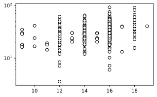
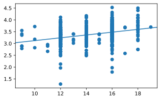
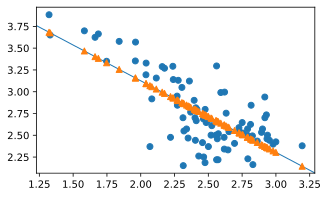

3장 단순회귀 모형의 추정
3장 단순회귀 모형의 추정과 관련된 실습을 한다. 데이터와 필요한 파이썬 패키지는 여기 참조.
우선 다음 명령으로 python interpreter를 실행한다.
다음 명령들을 실행한다(복사 → 붙여넣기). 처음 실행할 때에는 시간이 좀 걸릴 수 있으나 그 다음부터는 빨리 될 것이다.
3.1 자료
소득과 환경오염
Ekc = pd.read_csv('csv/loedata/Ekc.csv')
fig = plt.figure(figsize=(8,3.5))
plt.subplot(1,2,1)
plt.scatter(Ekc.gdppcppp, Ekc.co2pc, facecolors='w', edgecolors='k')
#plt.plot(Ekc.gdppcppp, Ekc.co2pc, 'o', mfc='none')
plt.title("In original scale")
plt.subplot(1,2,2)
plt.scatter(Ekc.gdppcppp, Ekc.co2pc, facecolors='w', edgecolors='k')
plt.xscale('log')
plt.yscale('log')
plt.title('In log scale')
plt.show()

공무원 수 비율과 재정자립도
Pubserv = pd.read_csv('csv/loedata/Pubserv.csv')
Pubserv1 = Pubserv[Pubserv['servpc'] < 28].copy()
fig = plt.figure(figsize=(5,3))
plt.scatter(Pubserv1.servpc, Pubserv1.finind, color='w', edgecolors='k')
plt.show()

교육수준과 임금
Klips = pd.read_csv('csv/loedata/Klips.csv')
Klips2 = Klips[(Klips['regular']==1) & (Klips['married']==1)].copy()
print(Klips2.shape)
fig = plt.figure(figsize=(5,3))
plt.scatter(Klips2.educ, Klips2.labinc, color='w', edgecolors='k')
#plt.plot(Klips2.educ, Klips2.labinc, 'o', mfc='w')
plt.yscale('log')
plt.show()

Klips2['lnlabinc'] = np.log(Klips2['labinc'])
ave = Klips2[['educ','lnlabinc']].groupby(['educ']).mean(['lnlabinc']).reset_index()
print(ave)
educ lnlabinc
0 9 3.145510
1 10 3.239290
2 11 2.837503
3 12 3.262296
4 13 3.223670
5 14 3.342744
6 15 3.223641
7 16 3.476449
8 17 3.312591
9 18 3.693358
10 19 3.696848
fig = plt.figure(figsize=(5,3))
plt.plot(Klips2.educ, Klips2.lnlabinc, 'o', mfc='w')
plt.plot(ave['educ'], ave['lnlabinc'], '^', color='black', ms=10)
plt.show()

3.4 짧은 예제들
이하에서 산포도에 직선을 덧그릴 것인데, 필자가 실험해 본 바로는 직선을 그리면 산포도의 축이 바뀐다. 그러므로 산포도를 그린 다음에 축을 고정시키는 함수를 만들어서 호출하고자 한다. 다음과 같이 fix_lims 함수를 정의하고 앞에서 import한 plt의 클래스 함수로 이를 추가한다.
## https://stackoverflow.com/questions/972/adding-a-method-to-an-existing-object-instance
# We need this to fixate the limits of plots
import matplotlib.pyplot as plt
def fix_lims(self):
self.xlim(self.gca().get_xlim())
self.ylim(self.gca().get_ylim())
# Now patch plt
plt.fix_lims = fix_lims.__get__(plt)
# 위 method를 만들고 싶지 않으면 plt.fix_lims()를 모두 다음으로 교체
# plt.xlim(plt.gca().get_xlim())
# plt.ylim(plt.gca().get_ylim())
이제 plt.fix_lims()를 호출하면 그림의 축이 고정된다.
재정자립도 회귀: OLS와 LAD
from statsmodels.api import OLS, QuantReg
fm = 'finind~servpc'
ols = OLS.from_formula(fm, data = Pubserv1).fit()
lad = QuantReg.from_formula(fm, data = Pubserv1).fit(q=0.5)
fig = plt.figure(figsize=(5,3))
plt.plot(Pubserv1.servpc, Pubserv1.finind, 'o', mfc='w')
plt.fix_lims()
plt.axline((0, ols.params['Intercept']), slope=ols.params['servpc'])
plt.axline((0, lad.params['Intercept']), slope=lad.params['servpc'], linestyle=':')
plt.show()

재정자립도 회귀
import pandas as pd
import numpy as np
import statsmodels.formula.api as smf
Pubserv = pd.read_csv('csv/loedata/Pubserv.csv')
Pubserv1 = Pubserv[Pubserv['servpc'] < 28].copy()
ols = smf.ols('np.log(finind)~np.log(servpc)', Pubserv1).fit()
ols.params
수동으로 계산 결과 확인
위 결과를 수동으로 계산하고자 한다. Python에서 로그를 취하거나 표본평균, 합계 등은 numpy 패키지에 구현되어 있다. 앞에서 numpy를 np로 import했으므로 np.log, np.mean, np.sum 등이라고 해야 한다.
x = np.log(Pubserv1.servpc)
y = np.log(Pubserv1.finind)
xbar = np.mean(x)
xd = x-xbar
b1 = np.sum(xd*y)/np.sum(xd**2)
b0 = np.mean(y)-b1*xbar
b0,b1
데이터와 회귀 직선 그림으로 표시
그림을 그릴 때 축을 고정하기 위해 여기에서 fix_lims() 메쏘드를 만들었다.
import matplotlib.pyplot as plt
fig = plt.figure(figsize=(5,3))
plt.scatter(x,y)
plt.fix_lims()
plt.axline((0,b0), slope=b1, color='k', lw=0.5)
plt.show()

직선 색깔을 검정색으로 했는데 별다른 이유가 있어서는 아니고, 색깔 줄 때 어떻게 하는지 알아보려고 한번 해 본 것이다.
교육수준과 연간 근로소득
import pandas as pd
import numpy as np
import statsmodels.formula.api as smf
Klips = pd.read_csv('csv/loedata/Klips.csv')
Klips2 = Klips[(Klips['regular']==1) & (Klips['married']==1)].copy()
ols = smf.ols('np.log(labinc)~educ', data = Klips2).fit()
ols.params
그림을 그릴 때 축을 고정하기 위해 여기에서 fix_lims() 메쏘드를 만들었다.
import matplotlib.pyplot as plt
fig = plt.figure(figsize=(5,3))
plt.scatter(Klips2.educ, np.log(Klips2.labinc))
plt.fix_lims() # see above
b0,b1 = ols.params
plt.axline((0,b0), slope = b1)
plt.show()

고령인구비율과 흡연율
import pandas as pd
import statsmodels.formula.api as smf
Death = pd.read_csv('csv/loedata/Death.csv')
Death10 = Death[Death.year==2010].copy()
ols = smf.ols('smoke~aged', data=Death10).fit()
ols.params
그림을 그릴 때 축을 고정하기 위해 여기에서 fix_lims() 메쏘드를 만들었다.
import matplotlib.pyplot as plt
fig = plt.figure(figsize=(5,3))
plt.scatter(Death10.aged, Death10.smoke)
plt.fix_lims()
b0,b1 = ols.params
plt.axline((0,b0), slope=b1)
plt.show()

소비함수
import pandas as pd
import statsmodels.formula.api as smf
Consumption = pd.read_csv('csv/Ecdat/Consumption.csv')
ols = smf.ols('ce~yd', data = Consumption).fit()
ols.params
그림을 그릴 때 축을 고정하기 위해 여기에서 fix_lims() 메쏘드를 만들었다.
import matplotlib.pyplot as plt
fig = plt.figure(figsize=(5,3))
plt.scatter(Consumption.yd, Consumption.ce)
plt.fix_lims()
b0,b1 = ols.params
plt.axline((0,b0), slope = b1, color='k', lw=0.5)
plt.show()

유전학과 Galton의 “회귀”
import pandas as pd
import statsmodels.formula.api as smf
Galtonpar = pd.read_csv('csv/loedata/Galtonpar.csv')
ols = smf.ols('avgsonht~midparht', data = Galtonpar).fit()
ols.params
그림을 그릴 때 축을 고정하기 위해 여기에서 fix_lims() 메쏘드를 만들었다.
import matplotlib.pyplot as plt
Galtonpar.plot.scatter(x = 'midparht', y = 'avgsonht', figsize=(5,3))
plt.fix_lims()
b0,b1 = ols.params
plt.axline((0,0), slope = 1, linestyle=':')
plt.axline((0,b0), slope = b1)
plt.show()

위 그림에서 점선은 45도선이다.
우주의 나이
Galaxy y x
0 NGC0300 133 2.00
1 NGC0925 664 9.16
2 NGC1326A 1794 16.14
3 NGC1365 1594 17.95
4 NGC1425 1473 21.88
import matplotlib.pyplot as plt
hubble.plot.scatter(x='x', y='y', figsize=(5,3))
plt.axline((0,0), slope=ols.params['x'])
plt.show()

담배 가격과 판매량
import numpy as np
import pandas as pd
import statsmodels.formula.api as smf
Cigar = pd.read_csv('csv/Ecdat/Cigar.csv')
Cigar90 = Cigar[Cigar.year==90].copy()
ols = smf.ols('np.log(sales)~np.log(price)', data=Cigar90).fit()
ols.params
3.6 맞춘값과 잔차
재정자립도 회귀
그림을 그릴 때 축을 고정하기 위해 여기에서 fix_lims() 메쏘드를 만들었다.
import pandas as pd
import numpy as np
import statsmodels.formula.api as smf
Pubserv = pd.read_csv('csv/loedata/Pubserv.csv')
Pubserv1 = Pubserv[Pubserv['servpc'] < 28].copy()
ols = smf.ols('np.log(finind)~np.log(servpc)', data = Pubserv1).fit()
b0,b1 = ols.params
import matplotlib.pyplot as plt
plt.figure(figsize=(5,3))
plt.scatter(np.log(Pubserv1.servpc), np.log(Pubserv1.finind), zorder=1)
plt.fix_lims()
plt.axline((0,b0), slope=b1, linewidth=1, zorder=2)
plt.scatter(np.log(Pubserv1.servpc), ols.fittedvalues, marker = '^', zorder=3)
plt.show()

잔차합, 설명변수와 잔차의 곱의 합, 맞춘값과 잔차의 곱의 합
print(f"Sum of residuals = {np.sum(ols.resid)}")
print(f"Sum of x*uhat = {np.sum(ols.resid*np.log(Pubserv1.servpc))}")
print(f"Sum of yhat*uhat = {np.sum(ols.fittedvalues*ols.resid)}")
Sum of residuals = 9.547918011776346e-14
Sum of x*uhat = 2.5029978090174154e-13
Sum of yhat*uhat = 2.485095462745335e-13
3.9 R제곱
OLS 회귀 결과 요약
OLS Regression Results
==============================================================================
Dep. Variable: np.log(finind) R-squared: 0.553
Model: OLS Adj. R-squared: 0.548
No. Observations: 84 F-statistic: 101.5
Covariance Type: nonrobust Prob (F-statistic): 5.27e-16
==================================================================================
coef std err t P>|t| [0.025 0.975]
----------------------------------------------------------------------------------
Intercept 4.7675 0.202 23.559 0.000 4.365 5.170
np.log(servpc) -0.8212 0.081 -10.076 0.000 -0.983 -0.659
==================================================================================
Notes:
[1] Standard Errors assume that the covariance matrix of the errors is correctly specified.
SSE/SST = R-squared
아래 두 값은 동일하다.
3.11 측정단위의 변환
예제 3.1 단위 변환의 유용성
설명변수를 1000으로 나눈 후 회귀하면, 원래 계수추정치에 1000을 곱한 값이 새로운 추정치가 된다.
로그와 측정단위 변환
설명변수가 로그 형태인 경우 설명변수를 1000으로 나누어도 절편 추정치만 영향을 받는다.